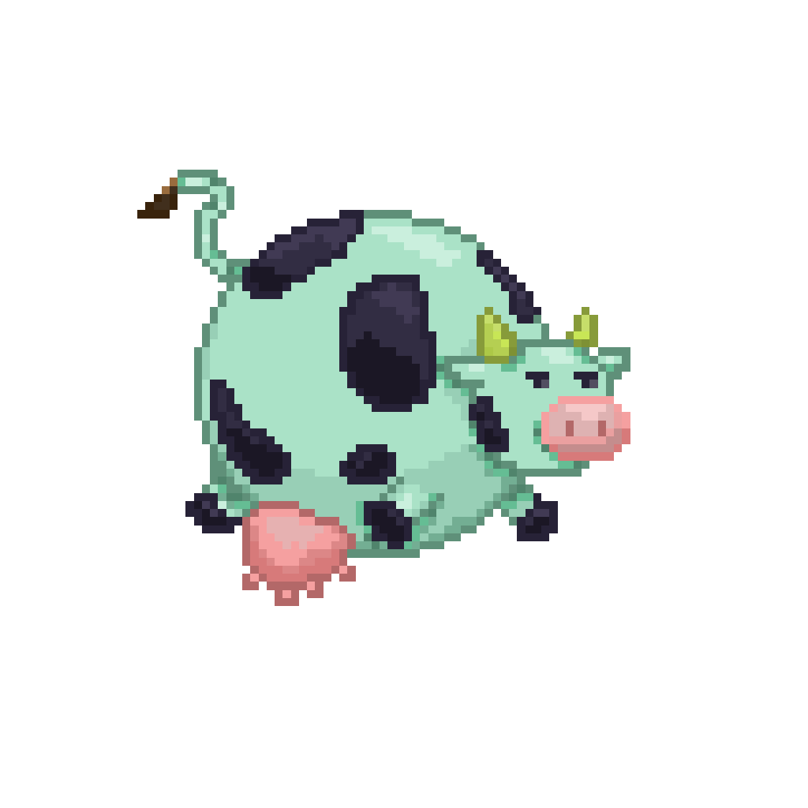
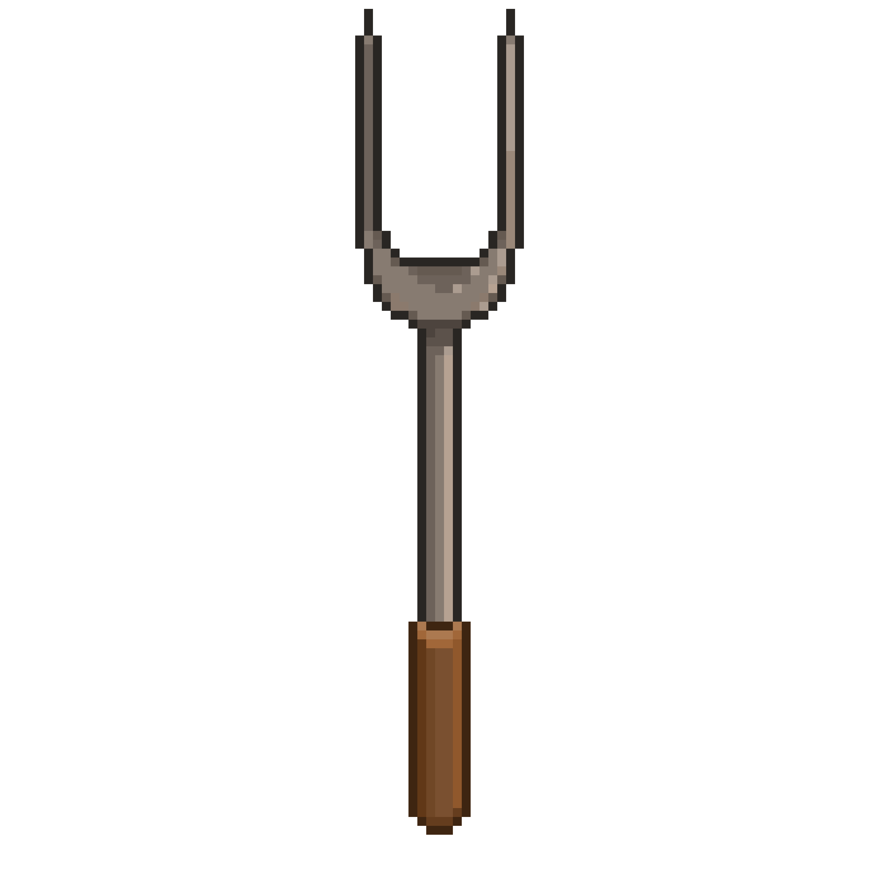
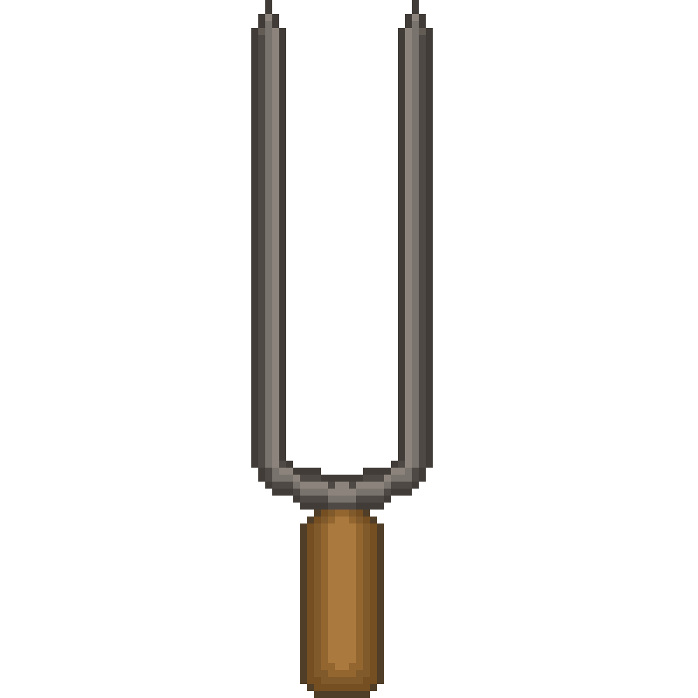
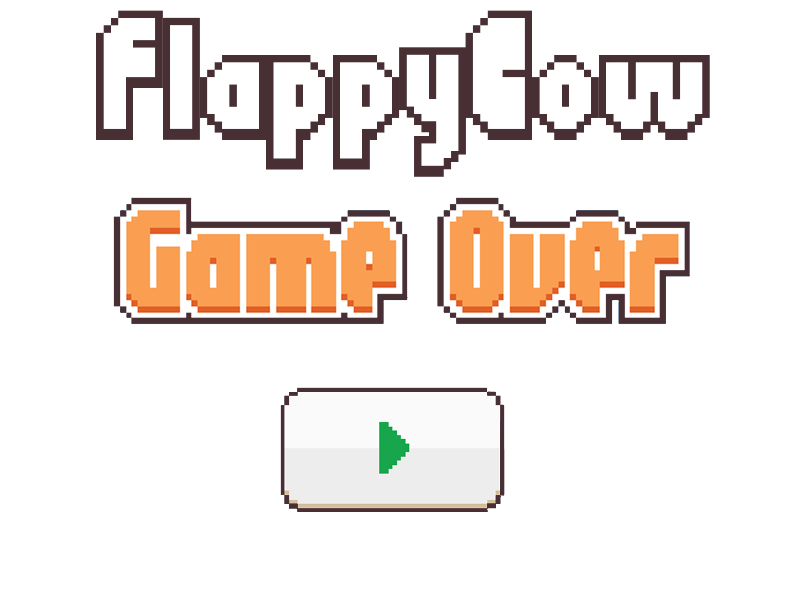
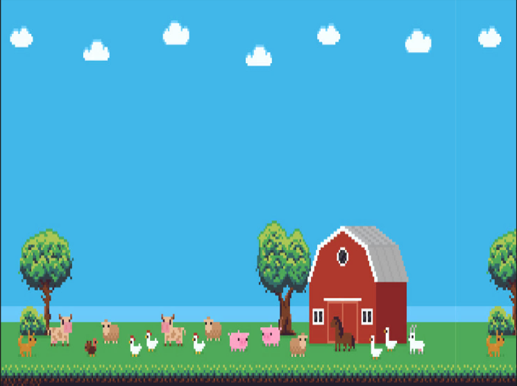
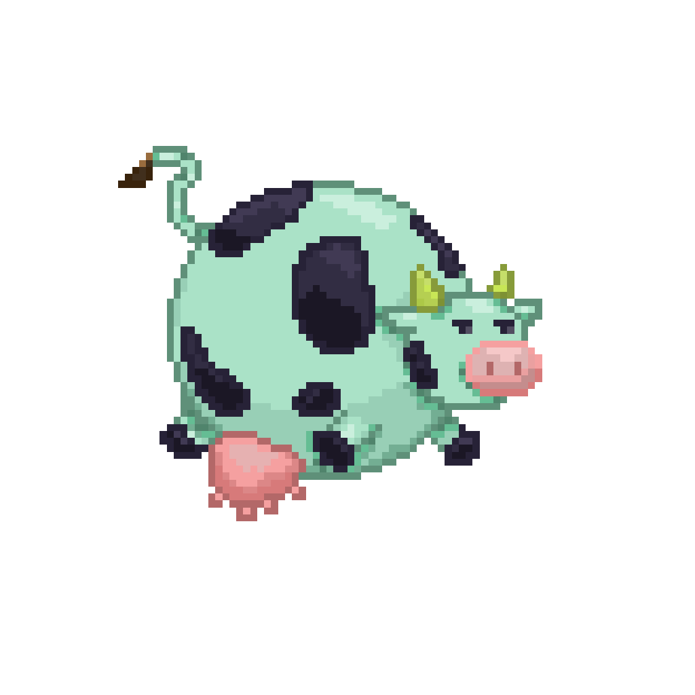
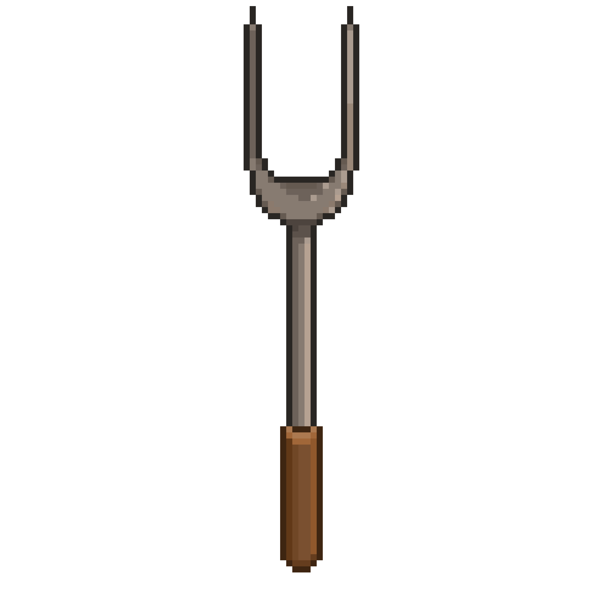
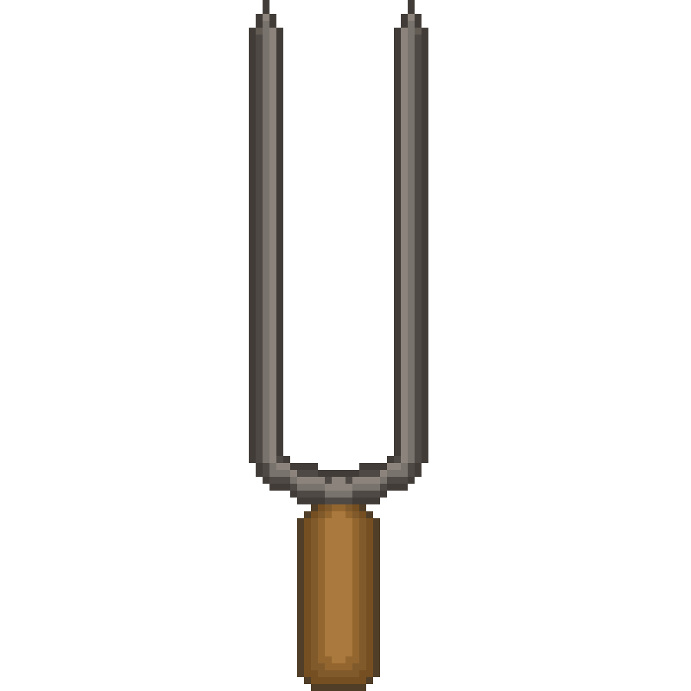
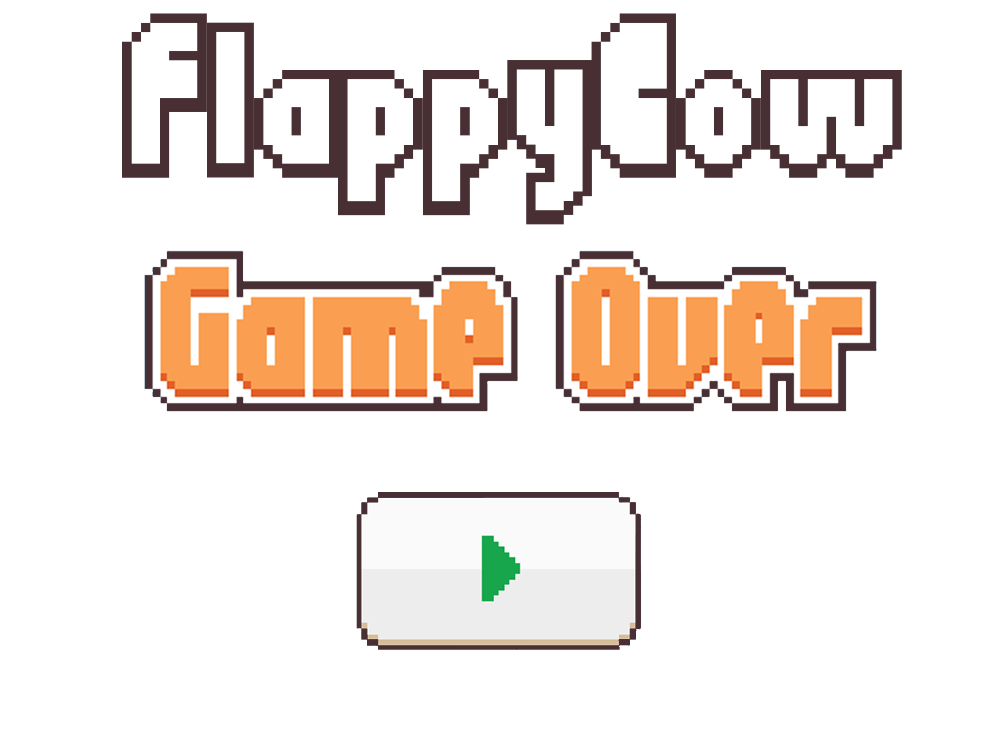
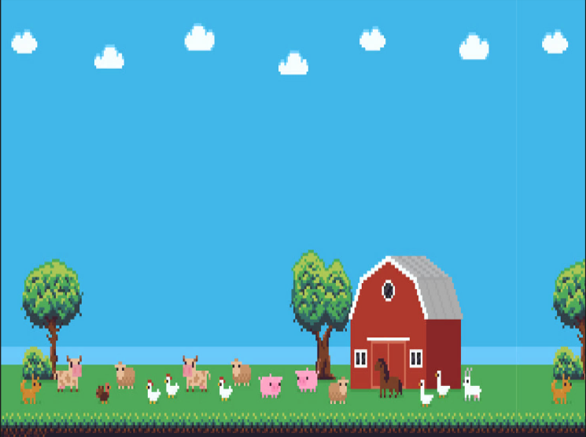

JOGO: "FLAPPY COW".
DESCRIÇÃO:
O jogo "FlappCow" foi um projeto realizado no curso de programação de dispositivos móveis com o intuito de aprender sobre a função Touch. O jogo é uma versão criada a partir do jogo original FlappyBird, que consiste em pular e não deixar a vaca bater nos espetos para não virar churrasco.
ILUSTRAÇÕES REALIZADAS:
 








